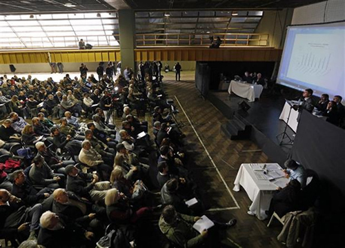

Real Chubut - Agencia de Noticias


Lo que se dijo en la Audiencia

Más de 80 expositores fueron escuchados este viernes durante las 13 horas que duró la primera jornada de la audiencia pública por el tarifazo de gas más celebrada en la Usina del Arte, del barrio porteño de La Boca.
Funcionarios nacionales, provinciales, empresarios, defensores del pueblo y de asociaciones de defensa al consumidor de todo el país pudieron expresar sus opiniones sobre el nuevo cuadro tarifario que el Gobierno aplicará desde octubre próximo, con aumentos de entre 237% y 500%, según sean usuarios residenciales o comerciales, respectivamente.
Las principales declaraciones de los exponentes, que en muchos casos representaron a compañías energéticas, actuales prestadoras de servicios del Estado, y de otro tanto de dirigentes, referentes y personas involucradas en el análisis de los incrementos del servicio.
Daniel Gerold (GYG S.A., ingeniería y consultoría ambiental.): "El Gobierno anterior lanzó un plan eficaz para aumentar la producción de gas, revirtió el declive y aumentó 12%, 13%. Existe potencial para producir más gas. Los costos son altos, hay que bajarlos".
Garcia Mansilla (Cámara de Exploración y Explotación de Hidrocarburos): "Los precios del gas tienen que ser definidos por oferta y demanda. Hay que eliminar las regulaciones distorsivas. Hay que priorizar la producción local por encima de la importación".
Transportadora de Gas del Sur (TGS, licenciataria): "Congelar y pesificar las tarifas nos perjudicó. Deberíamos estar en el quinto proceso de revisión de tarifas y recién empezamos el segundo". Tras respaldar el esquema propuesto por el ministro Juan José Arangueren, TGS solicitó la "instrumentación inmediata" del ajuste de la tarifa de transporte. "La revisión debe hacerse de forma justa y razonable. Para garantizar la sustentabilidad. Con este aumento el usuario sólo paga 3% de la factura en concepto de transporte. Desde 2011 tenemos déficit operativo y no recibimos subsidios".
Armando Caputo (Vicepresidente de la Cámara de Propiedad Horizontal y Actividades Inmobiliarias): "Traemos una propuesta especial para nuestros representados que contemple los distintas facturas de quienes viven en propiedad horizontal. No se puede entrar en un cuadro tarifario que sea excesivo para la gente. No debe haber ni vencedores ni vencidos. Lo mejor para los consorcistas y los empresarios".
Araceli Ferreyra (Diputada nacional FpV): "El 70% de los anotados no están en la audiencia. Como no tuvimos respuesta entramos a hacer el planteo y estamos esperando que respondan. Es un escándalo. Se inscribieron más de 1.000 personas y hay 300 (expositores). Es una audiencia trucha".
Horacio Morinigo (vecino de Balvanera, excluido de la lista de oradores): "Quiero ejercer mi derecho como ciudadano. Digitaron la lista, es un gesto de autoritarismo. Los ciudadanos no tenemos derecho de expresarnos".
Hugo Torrese (vecino excluido): "Fue perjudicado como todos los demás".
Fernanda Muñoz (vecina excluida): "Es arbitrario".
Carlos Muniagunia (vecino excluido): "Somos el pueblo, los afectados".
Roberto Feletti (secretario de Hacienda de La Matanza): "Esperamos que haya una reflexión del Gobierno, que no sea una transferencia a las productoras de gas y que se respete el derecho de acceso a todos los ciudadanos. El gas se usa para cocinar y calefaccionar, no hay derroche. Queremos transparencia en la estructura de costos. Hay una dolarización encubierta de las tarifas, es un riesgo ante un salto cambiario".
Osvaldo Riopedre (Adecua): "No tienen el valor de boca, el aumento es antojadizo. Creemos que tiene que haber un sinceramiento de la tarifa pero tiene que ser gradual y razonable. Y que el usuario no termine pagando la fiesta de 12 años".
Liliana Schwindt (diputada nacional Frente Renovador): "En un principio, la audiencia está bastante mal organizada. Cuando llegamos no había luz, se atrasó 20 minutos el inicio. Hasta ahora se habló mucho sobre el futuro, pero de las cosas concretas en cuanto a precios y plata nadie dijo nada".
Hector Polino (Titular de Consumidores Libres): "Tenemos que dejar de importar energía más cara. El precio debería tender a ser más barato con el tiempo y lo planteado por el ministerio es exactamente al revés. Lo lógico desde el punto de vista de los intereses de los usuarios del país es que a futuro el precio sea similar al valor. Nos oponemos a que se establezca un aumento del 203 %, porque los aumentos de sueldos de la mayoría de los ciudadanos no fue de ese valor y eso no se condice con el nivel socieconómico de la población".
Sandra González (Presidente de ADECUA): "Hace 10 años no se cumple nada, en 2014 cuando subieron el gas nadie se presentó como o se hizo alguna denuncia judicial". "Creemos que hay que sincerar las tarifas, tener una gradualidad y hay que dividir el país e insistimos en tener en cuenta a los lugares donde las temperaturas son mucho más bajas".
Susana Andrada (Presidenta del CEC): "Me parece una falta de respeto que no hayan estado las empresas para escuchar a las asociaciones de consumidores". "Lógicamente las tarifas se tenían que adecuando pero un aumento de 203% sin tener en cuenta los sectores vulnerables, me parece que se tendría que dejarse de lado". "En ningún momento me quedó en claro cuál será la inversión que van a hacer las empresas lo que vi fue un apetito voraz por aumentar las tarifas".
Leonardo Tarifa (Sindicato de Personal Jerárquico y Profesional de Petróleo y Gas de Neuquén, Río Negro y La Pampa): "Mi apellido no fue un recurso publicitario", ironizó y le robó algunas sonrisas a los pocos y exhaustos presentes que quedaban en el auditorio. Luego defendió aumento del precio de boca de pozo propuesto por el Gobierno.